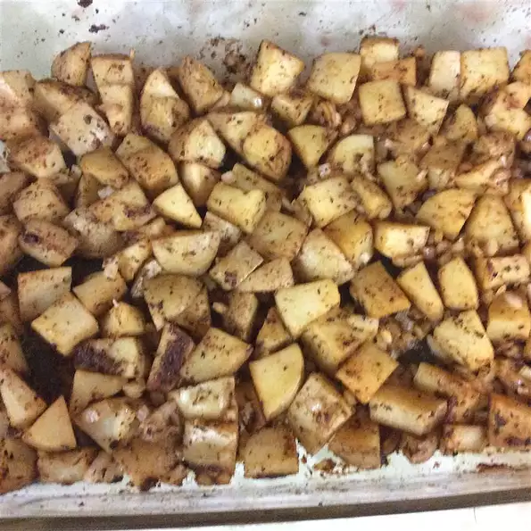

This is a potatoes recipe

Spiced Potatoes
Traditional, full-flavored lasagna is layered together in just minutes with pasta sauce, noodles, and three
cheeses.
Ingridients
- 6 red potatoes, cubed
- 1 teaspoon paprika
- 1 teaspoon cayenne pepper
- 1 teaspoon onion salt
Steps
- Bring a large pot of salted water to a boil. Add potatoes and cook until tender but still firm, about 15
minutes. Drain and spread on a baking sheet.
- In a small bowl, or cup, combine paprika, cayenne, chili powder, onion salt, garlic powder and parsley.